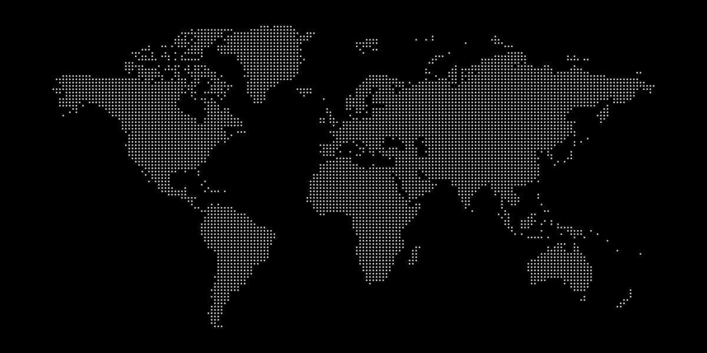
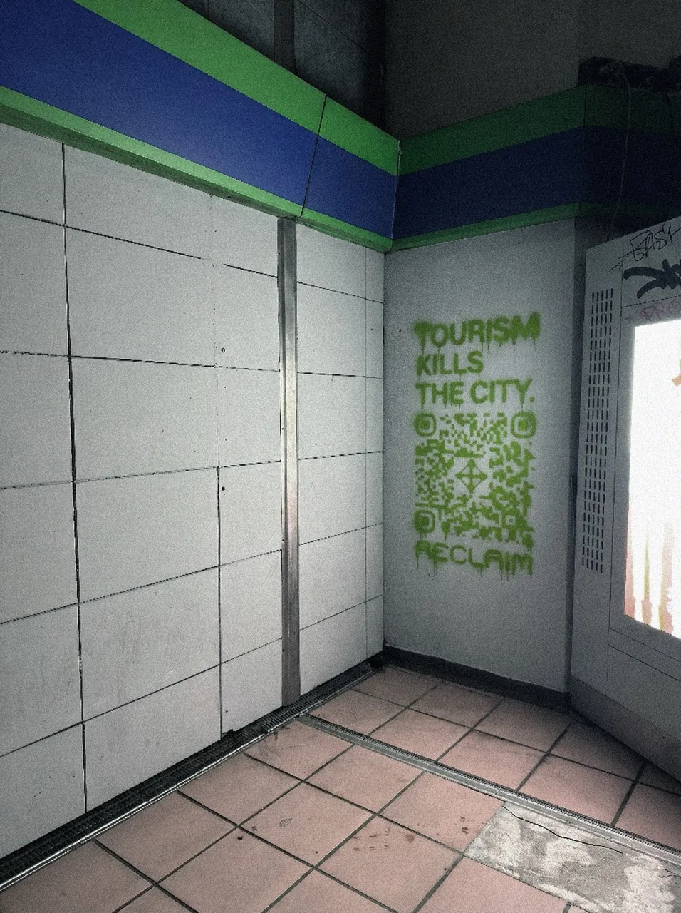
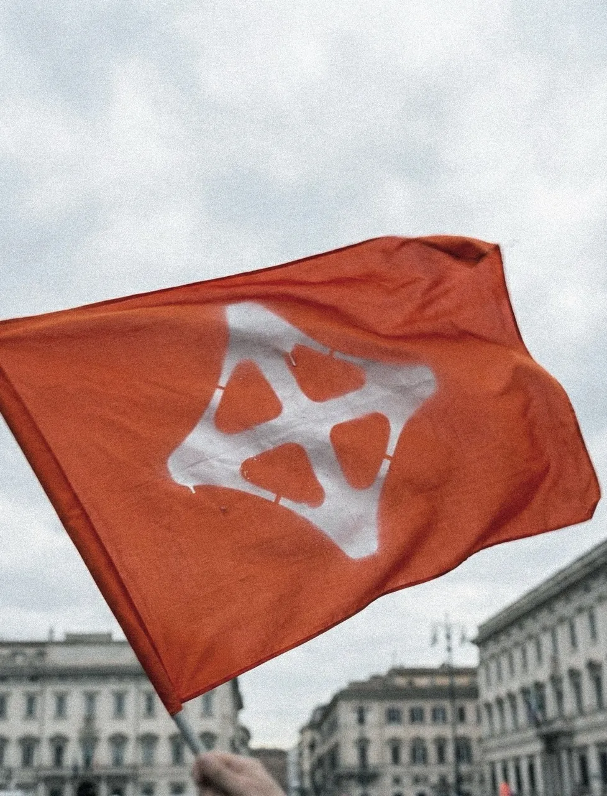
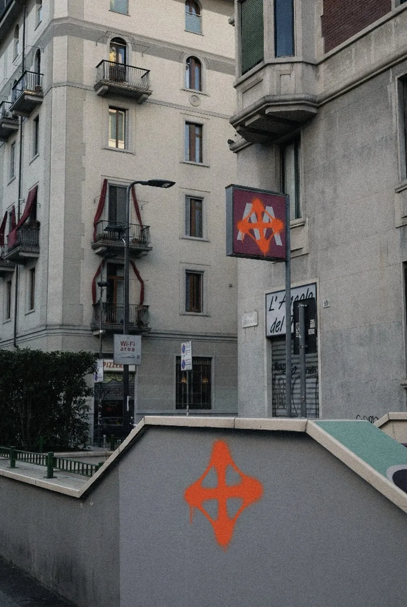

THE INVASION
ACTIVE CITIES

THE STRUGGLE
Streets are suffocated. Neighborhoods are held hostage. Places are slowly stripped from local
hands—the exception has become the norm: the city is deafening, and the resident's voice goes
unheard. Travelers, investors, visitors—they are not guests, they are the symptoms of an
infection. They are the beneficiaries of a system that forces us to be secondary in our own
lives.
When systems stall and society no longer asks whether a solution is ethical, but how usable,
immediate, and transformative it is, RECLAIM comes in as a way to re-establish boundaries,
reassert presence, and recover ownership of our spaces. The principle is simple: when balance is
lost, we build the tools to restore it.

THE SOLUTION
RECLAIM is an immersive, physical gaming experience engineered as a practical solution to the
systemic malaise of over-tourism and cultural displacement.
The game is a literal embodiment of the principle of "taking back what has been taken"—one's
space, one's utility, one's daily rhythm. By requiring players to use physical tools to interact
with and mark their territory, RECLAIM becomes a ritual of re-ownership. It is a refusal to
remain a passive, secondary figure in one's own life, by forcing the residents to stop asking
permission for their existence and to start asserting it through clear, physical action.

THE RECLAMATION
RECLAIM is a mechanism for turning invisible grievances—the daily erosion of calm, the weight of being "overlooked"—into visible, strategic engagement. It is a call to move beyond mere critique and to engage in a deliberate, deterministic act of control through action, forging a real-world path toward re-establishing a relationship with the place one calls home and freeing the city from the invasion of tourists.
